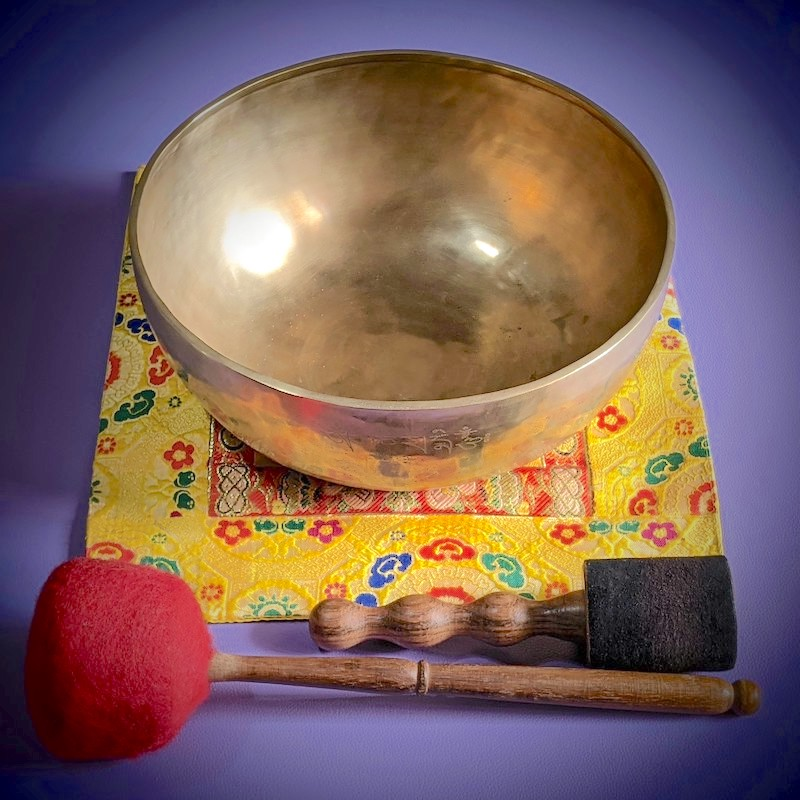
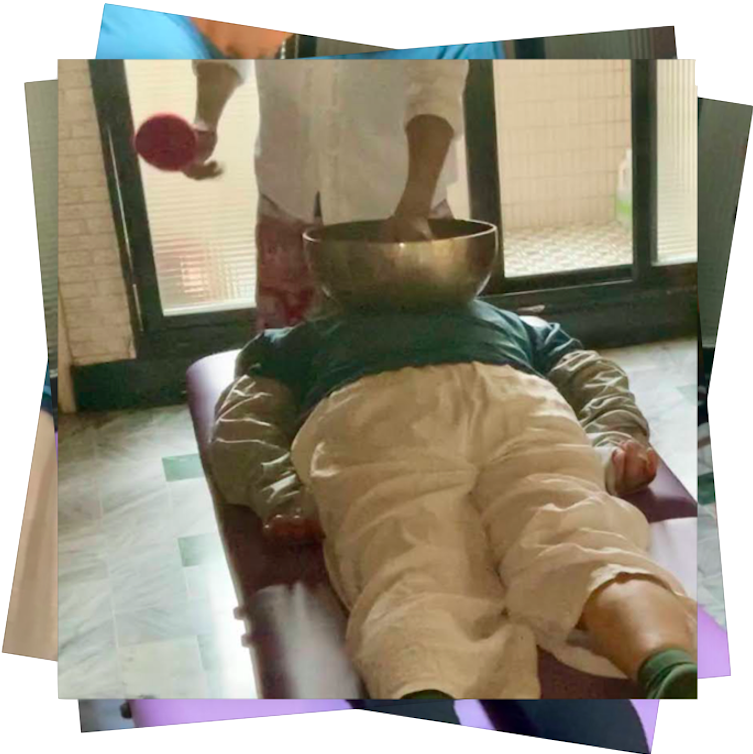

頌缽與調理
頌缽也稱為敲缽，是一種器具敲擊的過程，它所發出的音頻和大自然本身的頻率產生共鳴。頌缽讓躁動不安的分子逐漸沈穩，失眠狀態以平衡，堆積的壓力與傷痛隨之釋放消散，憂鬱的情緒得到按撫，當體内的能量能够和諧流動，自癒能力亦將被喚醒。

頌缽（敲缽）淨化身心靈，頌缽直接與身體的七個脈輪進行溝通，幫助打開糾結或阻塞的脈輪以及疼痛不適的部位組織，同時釋放酸性緊绷肌肉，譲躁動不安的分子逐漸深静穩定，引動深層迅速的放鬆，創造輕鬆的感覺。
頌缽與身體
人類的身體是生物電能系統，利用缽的振動及能量可清理調整各系統，進而促進平衡與建康。能量的振動頻率會影響到我們的細胞，當缽在人體經絡及輪脈運走時，被敲擊所產生的振動會穿透到我們體內碰觸到身體每一個細胞產生共振效應。
人體含有70%的水分，水是最好的載質，振動頻率會柔和的流入我們身體，對身體細胞及结構帶來很好的影響，可以把健康的頻率帶到身體失衡的部位，從而將體內不正常或崩緊的細胞自我重新排列。人體會產生疾病是細肥組織器官振動不平衡所造成，而頌缽能迅速讓細胞恢復和諧平衡，使身體恢復原有的狀態。
音波的振動越過理性思维，直接與意識對話，當頭腦透過聲音淨化整理之後，讓身心體驗到一種無上清明之感。藉由頌缽所發出精微的振動使人體緊繃的地方鬆開，停滯的能量自然流動，重新整合。
静心無念的任由頌缽遊走經絡，輪振五臟六腑，可以迅速有效的達到放鬆，增強造力靈感，調整失衡能量，自我療癒的能量就此產生。
服務簡介
你好，我是布魯斯。目前在斜槓人生扮演頌缽（敲缽）者，在一次偶然的機遇裡，由一位資深的師姐的因緣，結識了林X娣老師（實相頌缽創始人），在2018年習得頌缽解鎖技能。

這是一個有系統性的頌缽調理與敲擊的過程，從身體的正面、背面、側面、十二經絡（任督與臟腑）、七個脈輪，分別逐一的進行。

服務範圍，目前是中彰投地區，其它臨近的地區也是可以的，可以先用訊息聊聊來進行確認。在未來的日子裡會在一些適當的戶外場合進行服務，讓大家對頌缽有更多的接觸。相關的活動會再公告。

你有下列情況就適合進行頌缽（敲缽）調理：
睡眠改善，晚上不好入睡有失眠情況。
身體酸麻脹痛，吃藥效果不佳。
覺得心緖不寜、焦慮、抑鬱。
去看醫生都說很正常，但身體還是怪怪的不舒服。
莫名緊張，莫名煩躁。
工作壓力、家庭壓力、關係的壓力、現代人稱為慢性壓力。
睡眠改善、筋肌放鬆、身心靈舒緩、氣脈疏通、腸胃不適。
頌缽時間，全身約60分鐘，半身約30分鐘。
注意，為了保護被頌缽的人與持缽施作的人，不管大家性別為何，考量安全議題，建議找朋友或者家人陪同哦。
頌缽與自然療法
當今世界最好的自然療法之一，頌缽静心尋回寜静與力量。
不依靠藥物的特性，不打針、不吃藥、沒有侵入性、沒有醫療器材，這就是最大的優點，利用自然的方法加速人體修復能力，令身體的器官能和諧運作，既能達致修復效果，亦可作保健養生。聆聽頌缽那優美而沉穩的音色，亦是一大享受，更適合都市人作鬆馳減壓靜心之用。
有下列身心靈狀況可透過頌缽自然療法來調理
身體方面：心律不正、胸口翳悶、幫助氣血順暢流通、頭痛、腰痛、背痛、胃痛、腸胃不適、消化不良、便秘、耳鳴、減少中風機會、中風後加速康復、加速修復身體健康。
心靈方面：失眠、焦慮、抑鬱、心緒不寧、鬆弛減壓、靜心、提高工作效率及生產力、提高學習能力、提高記憶力等。
靈性方面：開啟直覺力及洞察力。提升禪坐的定靜深度及速度。
頌缽與冥想
冥想進入宇宙虛極，頌缽的聲音就像是來自宇宙的源頭，頌缽冥想中可以很容易地進入宇宙虛極感覺，進而讓身體中空，當愁绪被淨化，内心變的無比安静，七脈輪暢通無比，身體已不是有形的軀體，感受已經成為宇宙的—部份，内心只有寜静與愛，能量流暢，心性在提升擴大。
靈性的無想之界，當頌缽獨持的震蕩從音響流瀉而出，沁人心扉時，你將感覺到自己的身心化作無窮盡的天空，隨著頌缽美妙的音樂震蕩就有無數的日月星辰在每個細胞內散開，這種和自然宇宙共振融和的神秘美感，特為身心靈帶來無限滿足與感動。人類所有的智慧都在這具肉身裏，當每一個细胞開始通透時，你無需覺知，自然覺知，你無需領悟，自然領悟，你無需修行，自然圓滿。
覺察自己，你是否凖備好，願意讓我陪伴你踏上一段探索自我的旅途？頌缽除了多數人普遍認可的放鬆減壓的效果，頌缽也可帶領你走得更深更遠覺察自己。